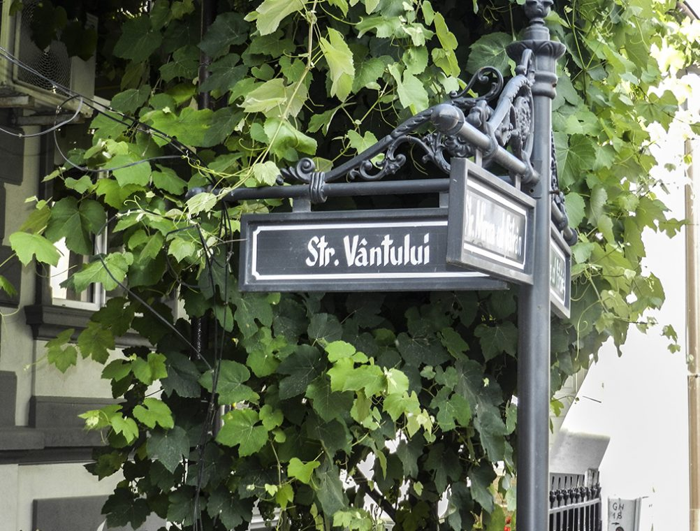
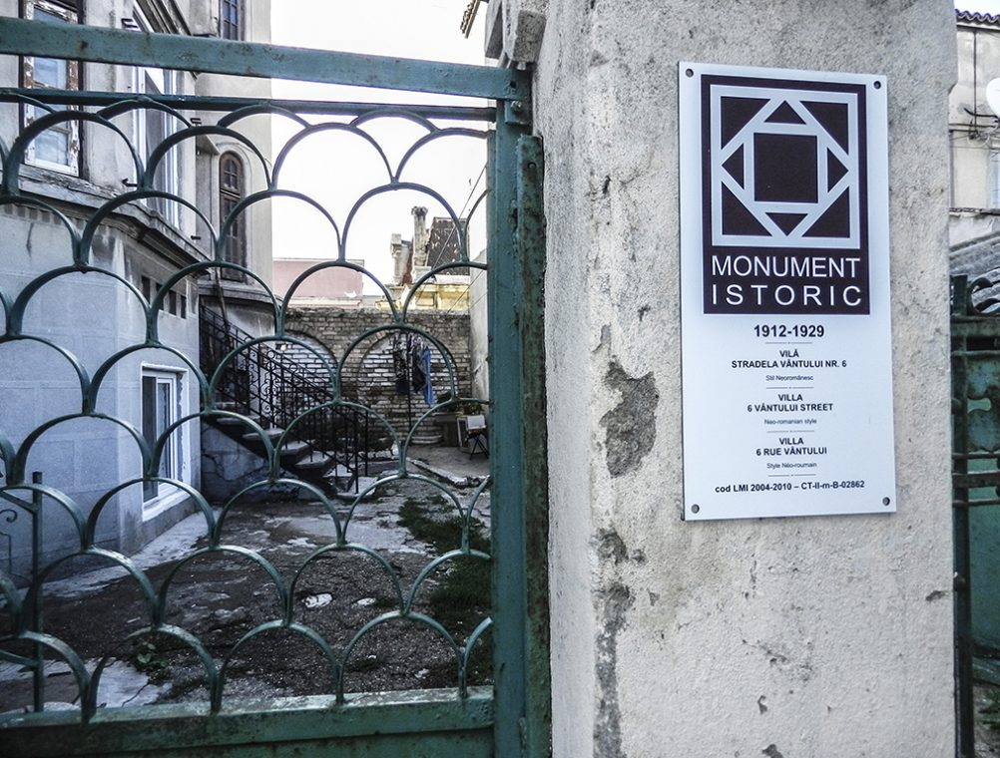

140 de pași coborând spre mare și anvergura brațelor unui călător – de atât este nevoie pentru a cuprinde și a admira în totalitate stradela Vântului din Constanța. Cea mai îngustă arteră pietonală din Peninsula constănțeană păstrează același farmec pentru care celebra stradelă a „Sforii“ a intrat printre obiectivele turistice ale Brașovului. Stradela Vântului, ghemuită printre clădirile ridicate la cumpăna dintre secolele al XIX-lea și al XX-lea, este a doua cea mai îngustă arteră din România. O zărești destul de greu, pentru că intrarea din strada Mircea cel Bătrân, aflată la doar câțiva metri de Biserica greacă Metamorfosis, seamănă mai degrabă cu un spațiu pierdut între două case, despre care crezi că se va înfunda în vreo curte închisă. Însă indicatorul stradal ce arată încrucișarea drumurilor confirmă existența unei străzi.
Intrarea, întunecată și ferită adesea de razele soarelui de cele două case ce îți dau senzația că se unesc la vârf, te ispitesc să explorezi mai departe. Odată ce ai călcat pe îngusta stradelă burdușită de clădiri care de care mai diferite, de-o parte și de alta, care te strâng ca într-o menghină, parcă te transpui într-una dintre poveștile lui Hans Christian Andersen.
Hans Christian Andersen și stradela Vântuluiar legenda spune că marele povestitor danez chiar ar fi menționat această îngustă stradelă în una dintre scrierile sale, descriind-o ca fiind o stradă lată cât o palmă. Deși povestea gâdilă urechile vizitatorilor, totuși îi lipsește miezul adevărului. Celebru pentru basmele sale nemuritoare, danezul ce le-a dat viață „Crăiesei Zăpezilor“ sau „Micii Sirene“ a trăit între anii 1805-1875. Așa cum documentele atestă, într-adevăr, la mijlocul secolului al XIX-lea, aflat într-un voiaj prelungit în Germania, Italia și Turcia, ajunge de la Istanbul, pe apă, în vechiul Kustenge. Creatorul de basme danez trăgea, în anul 1841, în micuțul port al Constanței otomane. În însemnările sale despre această călătorie, publicate în limba daneză sub titlul „Bazarul unui poet“, Andersen descria vechiul Kustenge: „Kustendje este aşezată pe un mal povârnit, cu stânci calcaroase, încrustate cu scoici. Nici un copac, nici un tufiş, doar câteva colibe fără geamuri, cu acoperiș de stuf rezemat în pământ, înconjurate de o împrejmuire de piatră. Un steag flutură, un grup de femei privesc sub văl sosirea, iar tătarii se pornesc strigând întru întîmpinarea pasagerilor. Debarcaderul se compune din blocuri din piatră trântite unul peste altul (…) Case sărăcuţe, pe jumătate dărăpănate, formau strada principală, care era destul de lată; ici colo zăceau coloane de marmură și de piatră cenușie care după înfăţişare aparţineau unei epoci mai vechi“. Și totuși, de ce nu ar fi putut să descrie Andersen și micuța stradelă a Vântului? Datele istorice și coordonatele geografice arată că era imposibil ca stradela Vântului să existe în momentul în care Hans Christian Andersen bătea aleile prăfuite ale vechiului Kustenge. La 1840, Constanța era un oraș foarte mic. Dacă după Războiul Crimeii dintre anii 1853-1856, urbea era compusă doar din câteva sute de case, cu siguranță în anii 40 ai secolului al XIX-lea existau mult mai puține imobile. Chiar descrierea lui Andersen arată că a găsit aici „doar câteva colibe fără geamuri (…) case sărăcuțe, pe jumătate dărăpănate“ care „formau strada principală“. Ținând cont de aceste descrieri și de faptul că vechiul Kustenge avea case răzlețe, nu era logic să fi existat această mică arteră de numai doi metri lățime, ce nu putea fi creată decât pentru a despărți două rânduri de case, aflate foarte aproape unele de altele. Pe de altă parte, dacă ne gândim că zidul otoman, adică marginea Kustengeului, era geografic așezat puțin mai la nord de curtea Geamiei Hunkiar, până în fosta primărie a Constanței, actualul Muzeu de Artă Populară, este limpede că stradela Vântului nu putea să fie în interiorul cetății. Asta și pentru că, abia în anul 1868, atunci când a fost construită Biserica greacă Metamorfosis, marginea orașului se extinsese înspre nord, adică peste actuala poziționare a stradelei Vântului. În momentul construirii lăcașului de cult, acolo nu era decât un maidan. În afară de aceste lucruri, nici una dintre clădirile de pe această arteră nu datează din perioada otomană şi nu sunt indicii din care să rezulte că actualele imobile au fost ridicate pe fundaţii mai vechi sau au fost modificate în spiritul unei epoci ulterioare, mai generoase cu spaţiile de locuit şi cu facilităţile lumii moderne. Deci, este foarte clar că la 1841 nu putea exista o stradelă atât de îngustă în extremitatea nordică a cetății otomane, aceasta neavând nicidecum caracteristicile unei străzi de frontieră a orașului. Iar dacă frumoasa legendă legată de descrierea lui Hans Christian Andersen rămâne doar un superb basm pentru turiștii Constanței, o privire atentă asupra geografiei zonei ne îndreptățește să credem că stradela Vântului, ce șerpuiește ca un defileu între liniile de construcții laterale, a fost construită ca o frontieră între mahalaua grecească și cea armenească. Stradela Vântului se află la o distanță aproximativ egală de străzile Aristide Karatzali și Callatis, străzi în jurul cărora s-au creat cele două cartiere ale Constanței Vechi. De asemenea, mahalalele au fost construite și configurate în jurul bisericilor grecească (Metamorfosis) și armenească (Sf. Maria), care, de asemenea, se găsesc diametral opus față de micuța stradelă a Vântului. Și, ținând cont că aceste construcții datează la sfârșitul secolului al XIX-lea este foarte clar faptul că descrierea vechiului Kustenge, făcută de Hans Christian Andersen, nu putea conține și referiri la Stradela Vântului. Astfel, micuța străduță de poveste, învăluită în basme daneze și în povești românești de la cumpăna secolelor XIX-XX rămâne, la fel ca stradela Sforii din Brașov, un obiectiv tocmai bun de vizitat. Mai ales că artera constănţeană este, practic, necunoscută turiştilor şi puţin obişnuită în memoria localnicilor. Și aici, ca și în cazul arterei din Brașov, găsim elemente unice, specifice fiecărei zone. Dacă în cazul stradelei Sforii, pașii printre clădirile în stil săsesc, cu arhitectură specifică, cu tușe medievale germane, te îndreaptă către masivul Tâmpa, coborârea pe stradela Vântului, cu un parfum mediteranean, de inspirație grecească, îți deschide la orizont marea.
